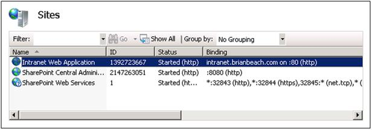
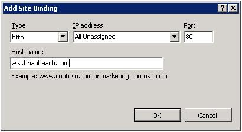

I noticed what I think is a bug (or maybe a limitation) in SharePoint 2010. When I use PowerShell to create a Host Header Site Collection, SharePoint does not create a binding in IIS. If I add the binding manually, everything works great, but I would expect SharePoint to do this for. Am I missing something?
The following PowerShell script will create a new web application. Note that I have the option to add a host header.
{{< highlight powershell "linenos=table" >}}
Add-PSSnapin Microsoft.SharePoint.Powershell -EA 0
Clear-Host
$WebAppURL = "http://intranet.brianbeach.com"
$HostHeader = "intranet.brianbeach.com"
$WebAppName = "Intranet Web Application"
$ContentDatabase = "Content_Intranet_Default"
$AppPoolName = "Intranet Content"
$AppPoolUserName = "DOMAIN\SERVICE_ACCOUNT"
$AppPoolCred = Get-Credential $AppPoolUserName
$AppPoolAccount = New-SPManagedAccount -Credential $AppPoolCred
$AuthProvider = New-SPAuthenticationProvider
$WebApp = New-SPWebApplication -ApplicationPool $AppPoolName -ApplicationPoolAccount $AppPoolAccount -Name $WebAppName -URL $WebAppURL -HostHeader $HostHeader -Port 80 -AuthenticationProvider $AuthProvider -DatabaseName $ContentDatabase
{{< / highlight >}}
When I run it, a new site is created in IIS and the appropriate binding is created with the host header I supplied.

This next script will add a host header site collection to the web application. According to the documentation for New-SPSite, there is no way to pass the host header.
{{< highlight powershell "linenos=table" >}}
Add-PSSnapin Microsoft.SharePoint.Powershell -EA 0
Clear-Host
$OwnerEmail = "administrator@brianbeach.com"
$OwnerAlias = "DOMAIN\administrator"
$WebAppURL = "http://intranet.brianbeach.com"
$SiteURL = "http://wiki.brianbeach.com"
$WebApp = Get-SPWebApplication $WebAppURL
New-SPSite -url $SiteURL -HostHeaderWebApplication $WebApp -owneralias $OwnerAlias -ownerEmail $OwnerEmail -Template "WIKI#0"
{{< / highlight >}}
When I run this script, the site collection is created, but the binding is not created in IIS.
If I create the binding manually everything works great.

NOTE: I was able to script the creation of the binding.
{{< highlight powershell "linenos=table" >}}
Import-Module WebAdministration
$WebAppName = "Intranet Web Application"
$HostHeader = "wiki.brianbeach.com"
New-WebBinding -Name $WebAppName -Port 80 -Protocol "http" -HostHeader $HostHeader
{{< / highlight >}}
Am I missing something? Is there another parameter I need to pass?